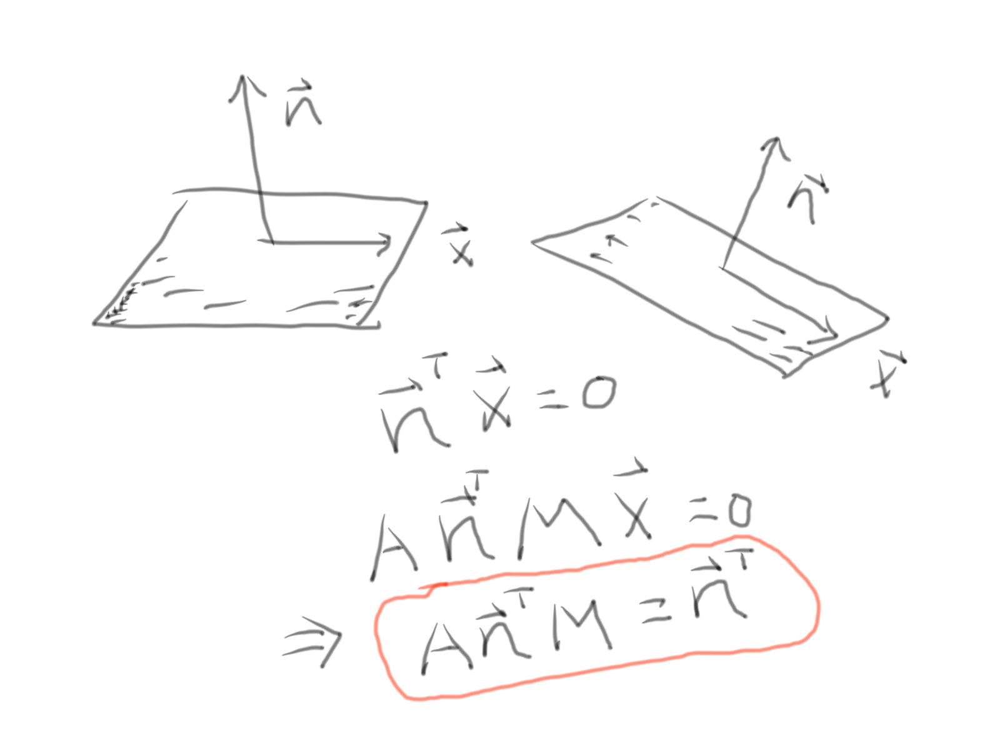

\[ \text{Identity} \]
\[
\begin{bmatrix}
1 & 0 & 0\\
0 & 1 & 0\\
0 & 0 & 1
\end{bmatrix}
\left[ \begin{array}{c}
a \\
b \\
c
\end{array}
\right] = \left[ \begin{array}{c}
a \\
b \\
c
\end{array}
\right]
\]
\[ \text{Scalar} \]
\[
\begin{bmatrix}
x & 0 & 0\\
0 & y & 0\\
0 & 0 & z
\end{bmatrix}
\left[ \begin{array}{c}
a \\
b \\
c
\end{array}
\right] = \left[ \begin{array}{c}
ax \\
by \\
cz
\end{array}
\right]
\]
\[ \text{Translation} \]
\[
\begin{bmatrix}
1 & 0 & 0 & x\\
0 & 1 & 0 & y\\
0 & 0 & 1 & z\\
0 & 0 & 0 & 1
\end{bmatrix}
\left[ \begin{array}{c}
a \\
b \\
c \\
d
\end{array}
\right] = \left[ \begin{array}{c}
a + x \\
b + y \\
c + z \\
d
\end{array}
\right]
\]
\[ \text{Rotation} \]
\[
M_{z}(\theta)=\begin{bmatrix}
cos(\theta) & -sin(\theta) & 0\\
sin(\theta) & cos(\theta) & 0\\
0 & 0 & 1
\end{bmatrix}
\text{ rotate around the z-axis in x-y plane}
\]
\[
M_{y}(\theta)=\begin{bmatrix}
cos(\theta) & sin(\theta) & 0\\
0 & 1 & 0 \\
-sin(\theta) & cos(\theta) & 0
\end{bmatrix}
\text{ rotate around the y-axis in x-z plane}
\]
\[
M_{x}(\theta)=\begin{bmatrix}
1 & 0 & 0 \\
0 & cos(\theta) & -sin(\theta)\\
0 & sin(\theta)& cos(\theta)
\end{bmatrix}
\text{ rotate around the x-axis in y-z plane}
\]
\[ \textbf{Transform normal vector using transpose inverse matrix} \]
$\mbox{Let } \mathbf{n} \,, \mathbf{u} \in \mathbb{R}^n \,, \mathbf{M} \mbox{ is affine transformnation that transforms } \mathbf{u} $
$\mathbf{A} \mbox{ is affine transformation that transforms the normal vector } \mathbf{n}$
$\mathbf{n} \mbox{ is normal vector to } \mathbf{u}$
\begin{equation}
\begin{aligned}
& \Rightarrow \mathbf{n}^{T} \mathbf{u} = \mathbf{0} \\
& \Rightarrow (\mathbf{A}\mathbf{n})^{T} \mathbf{M}\mathbf{u} = \mathbf{0} \\
& \Rightarrow (\mathbf{A}\mathbf{n})^{T} \mathbf{M} = \mathbf{n}^{T}\\
& \Rightarrow (\mathbf{A}\mathbf{n})^{T} = \mathbf{n}^{T}\mathbf{M}^{-1} \\
& \Rightarrow (\mathbf{A}\mathbf{n}) = \mathbf{M}^{-T} \mathbf{n}\\
& \Rightarrow \mathbf{A} = \mathbf{M}^{-T} \nonumber \\
\end{aligned}
\end{equation}
